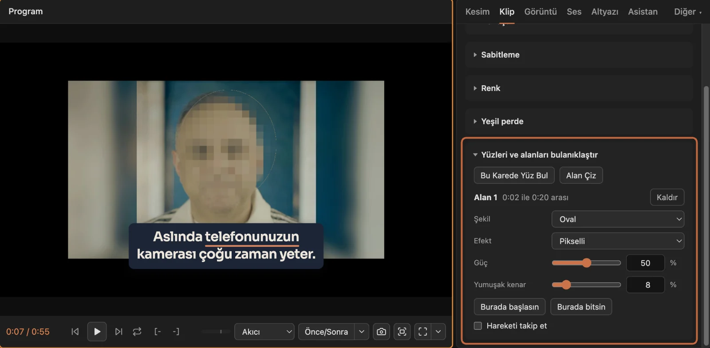

Yüz ve alan bulanıklaştırma
Bir yüzü, bir plakayı ya da bir ekranı gizle: bir kez seç, bulanıklık hareket ettikçe onu takip etsin.

Gizlenecek olanı seç
Klibi seç ve Klip › Yüzleri ve alanları bulanıklaştır'ı aç.
- Bu Karede Yüz Bul, sonra Gizlenecek yüze tıklayın. Yüzler en iyi, bir kez indirilip bu bilgisayarda çalışan yüz modeliyle bulunur; Yüz Modelini İndir onu önerir.
- Başka her şey için Alan Çiz.
Nasıl görünsün
- Bulanık ya da Pikselli; Kutu ya da Oval.
- Güç ve Yumuşak kenar: bulanıklığın bölgenin ne kadar dışına kadar azalarak süreceği. Bölgenin içinde her zaman tam güçtedir.
Takip et ve zamanla
- Hareketi takip et, yüzü ya da alanı klip boyunca izler. Bir değişiklikten sonra dışa aktarmadan önce Yeniden takip et.
- Burada başlasın ve Burada bitsin onu oynatma kafasından itibaren bir aralıkla sınırlar.
Kontrol et
Yüzün kaybolduğu yerde liste zamanıyla birlikte … arasını kontrol edin der: bulanıklık yerinde kalıp büyüdü ya da onun yerine geçen birine kaydı. İşaretlenen her aralığa bak. Bulanıklaştırılan kişi görüntüden çıkar ve aynı yerde başka biri durursa bulanıklık yanlış kişide kalabilir: bulanıklık bir güvence değildir, sonuca bak.
Birkaç kamerada her kamera ayrı seçilir (Bu Kamerada Seç).